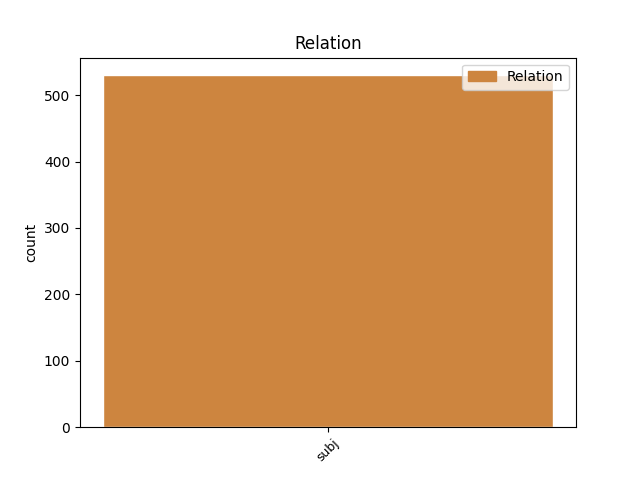
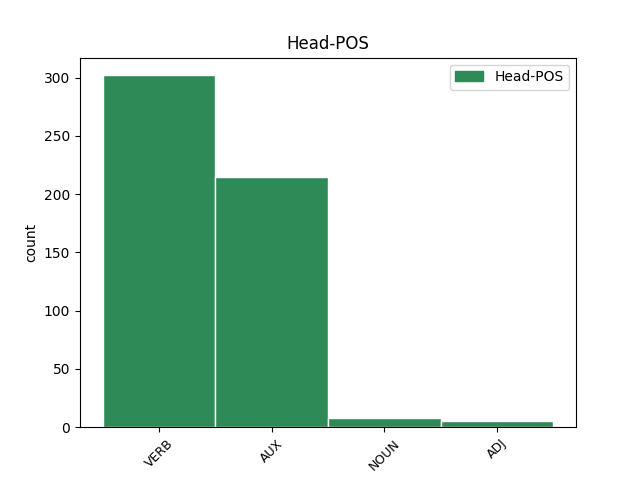
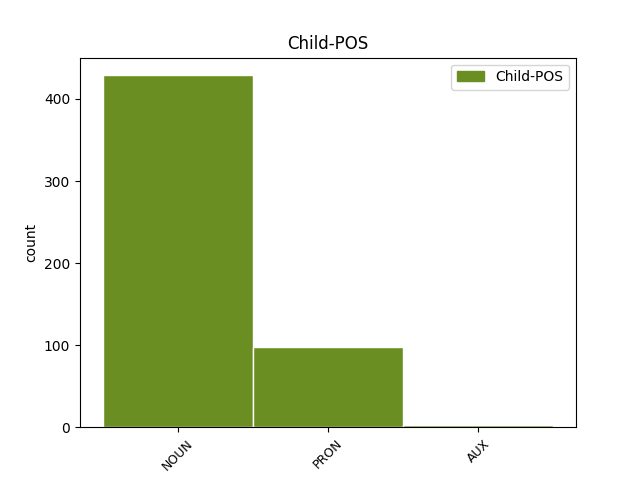

Distribution of features within this leaf



Agreement Rules sorted by frequency.
- When the dependent token is the subject(subj) of the head token, and the dependent token is NOUN.
1 06 _ _ _ _ 0 _ _ _
2 . _ _ _ _ 0 _ _ _
3 10 _ _ _ _ 0 _ _ _
4 . _ _ _ _ 0 _ _ _
5 14 _ _ _ _ 0 _ _ _
6 - _ _ _ _ 0 _ _ _
7 Arriva _ _ _ _ 0 _ _ _
8 la _ _ _ _ 0 _ _ _
9 " _ _ _ _ 0 _ _ _
10 buona _ _ _ _ 0 _ _ _
11 scuola _ _ _ _ 0 _ _ _
12 " _ _ _ _ 0 _ _ _
13 . _ _ _ _ 0 _ _ _
14 Si _ _ _ _ 0 _ _ _
15 salvi _ _ _ _ 0 _ _ _
16 chi _ _ _ _ 0 _ _ _
17 può _ _ _ _ 0 _ _ _
18 ! _ _ _ _ 0 _ _ _
19 : _ _ _ _ 0 _ _ _
20 Comunicato _ _ _ _ 0 _ _ _
21 Il _ _ _ _ 0 _ _ _
22 sindacato sindacato NOUN S Gender=Masc|Number=Sing 23 subj _ _
23 è essere AUX V Mood=Ind|Number=Sing|Person=3|Tense=Pres|VerbForm=Fin 0 _ _ _
24 un' _ _ _ _ 0 _ _ _
25 altra _ _ _ _ 0 _ _ _
26 cosa _ _ _ _ 0 _ _ _
27 - _ _ _ _ 0 _ _ _
28 FLC _ _ _ _ 0 _ _ _
29 ( _ _ _ _ 0 _ _ _
30 ... _ _ _ _ 0 _ _ _
31 ) _ _ _ _ 0 _ _ _
32 http://t.co/GBkUfwRJ5s _ _ _ _ 0 _ _ _
1 #tfaordinario _ _ _ _ 0 _ _ _
2 è _ _ _ _ 0 _ _ _
3 stato _ _ _ _ 0 _ _ _
4 il _ _ _ _ 0 _ _ _
5 fondo _ _ _ _ 0 _ _ _
6 cassa _ _ _ _ 0 _ _ _
7 per _ _ _ _ 0 _ _ _
8 la _ _ _ _ 0 _ _ _
9 riforma _ _ _ _ 0 _ _ _
10 di _ _ _ _ 0 _ _ _
11 la _ _ _ _ 0 _ _ _
12 #labuonascuola _ _ _ _ 0 _ _ _
13 di _ _ _ _ 0 _ _ _
14 @user _ _ _ _ 0 _ _ _
15 . _ _ _ _ 0 _ _ _
16 Beneficienza _ _ _ _ 0 _ _ _
17 la _ _ _ _ 0 _ _ _
18 faccio _ _ _ _ 0 _ _ _
19 quando _ _ _ _ 0 _ _ _
20 dico dire VERB V Mood=Ind|Number=Sing|Person=1|Tense=Pres|VerbForm=Fin 0 _ _ _
21 io io PRON PE Number=Sing|Person=1|PronType=Prs 20 subj _ SpaceAfter=No
22 !!!! _ _ _ _ 0 _ _ _
1 @user _ _ _ _ 0 _ _ _
2 : _ _ _ _ 0 _ _ _
3 #anagr _ _ _ _ 0 _ _ _
4 #comedire _ _ _ _ 0 _ _ _
5 MARIO _ _ _ _ 0 _ _ _
6 MONTI _ _ _ _ 0 _ _ _
7 Ampio _ _ _ _ 0 _ _ _
8 è _ _ _ _ 0 _ _ _
9 lo _ _ _ _ 0 _ _ _
10 spread _ _ _ _ 0 _ _ _
11 , _ _ _ _ 0 _ _ _
12 imperioso imperioso ADJ A Gender=Masc|Number=Sing 0 _ _ _
13 è essere AUX V Mood=Ind|Number=Sing|Person=3|Tense=Pres|VerbForm=Fin 12 subj _ _
14 il _ _ _ _ 0 _ _ _
15 richiamo _ _ _ _ 0 _ _ _
16 : _ _ _ _ 0 _ _ _
17 / _ _ _ _ 0 _ _ _
18 vada _ _ _ _ 0 _ _ _
19 a _ _ _ _ 0 _ _ _
20 il _ _ _ _ 0 _ _ _
21 governo _ _ _ _ 0 _ _ _
22 , _ _ _ _ 0 _ _ _
23 così _ _ _ _ 0 _ _ _
24 RIMONTIAMO _ _ _ _ 0 _ _ _
25 . _ _ _ _ 0 _ _ _
Disagree Examples:
1 più _ _ _ _ 0 _ _ _
2 che _ _ _ _ 0 _ _ _
3 bipolaristi _ _ _ _ 0 _ _ _
4 , _ _ _ _ 0 _ _ _
5 gli _ _ _ _ 0 _ _ _
6 italiani italiano NOUN S Gender=Masc|Number=Plur 7 subj _ _
7 sono essere AUX V Mood=Ind|Number=Sing|Person=1|Tense=Pres|VerbForm=Fin 0 _ _ _
8 bipolari _ _ _ _ 0 _ _ _
1 Berlusconi _ _ _ _ 0 _ _ _
2 : _ _ _ _ 0 _ _ _
3 " _ _ _ _ 0 _ _ _
4 Per _ _ _ _ 0 _ _ _
5 gli _ _ _ _ 0 _ _ _
6 aquilani _ _ _ _ 0 _ _ _
7 io io PRON PE Number=Sing|Person=1|PronType=Prs 10 subj _ _
8 e _ _ _ _ 0 _ _ _
9 Bertolaso _ _ _ _ 0 _ _ _
10 siamo essere AUX V Mood=Ind|Number=Plur|Person=1|Tense=Pres|VerbForm=Fin 0 _ _ _
11 come _ _ _ _ 0 _ _ _
12 la _ _ _ _ 0 _ _ _
13 Madonna _ _ _ _ 0 _ _ _
14 e _ _ _ _ 0 _ _ _
15 Gesù _ _ _ _ 0 _ _ _
16 " _ _ _ _ 0 _ _ _
17 . _ _ _ _ 0 _ _ _
18 Inesistenti _ _ _ _ 0 _ _ _
19 . _ _ _ _ 0 _ _ _
20 [ _ _ _ _ 0 _ _ _
21 malerba _ _ _ _ 0 _ _ _
22 ] _ _ _ _ 0 _ _ _
1 Per _ _ _ _ 0 _ _ _
2 le _ _ _ _ 0 _ _ _
3 devastazioni _ _ _ _ 0 _ _ _
4 di _ _ _ _ 0 _ _ _
5 Roma-Feyenoord _ _ _ _ 0 _ _ _
6 nessun _ _ _ _ 0 _ _ _
7 colpevole _ _ _ _ 0 _ _ _
8 . _ _ _ _ 0 _ _ _
9 È _ _ _ _ 0 _ _ _
10 sempre _ _ _ _ 0 _ _ _
11 così _ _ _ _ 0 _ _ _
12 quando _ _ _ _ 0 _ _ _
13 ci _ _ _ _ 0 _ _ _
14 sono essere VERB V Mood=Ind|Number=Plur|Person=3|Tense=Pres|VerbForm=Fin 0 _ _ _
15 di _ _ _ _ 0 _ _ _
16 mezzo _ _ _ _ 0 _ _ _
17 una _ _ _ _ 0 _ _ _
18 piazza piazza NOUN S Gender=Fem|Number=Sing 14 subj _ _
19 e _ _ _ _ 0 _ _ _
20 una _ _ _ _ 0 _ _ _
21 fontana _ _ _ _ 0 _ _ _
22 . _ _ _ _ 0 _ _ _
23 [ _ _ _ _ 0 _ _ _
24 @user _ _ _ _ 0 _ _ _
25 ] _ _ _ _ 0 _ _ _
1 L' _ _ _ _ 0 _ _ _
2 opuscolo opuscolo NOUN S Gender=Masc|Number=Sing 6 subj _ _
3 #labuonascuola _ _ _ _ 0 _ _ _
4 ora _ _ _ _ 0 _ _ _
5 lo _ _ _ _ 0 _ _ _
6 chiamano chiamare VERB V Mood=Ind|Number=Plur|Person=3|Tense=Pres|VerbForm=Fin 0 _ _ _
7 " _ _ _ _ 0 _ _ _
8 Libro _ _ _ _ 0 _ _ _
9 Bianco _ _ _ _ 0 _ _ _
10 su _ _ _ _ 0 _ _ _
11 la _ _ _ _ 0 _ _ _
12 Scuola _ _ _ _ 0 _ _ _
13 " _ _ _ _ 0 _ _ _
14 . _ _ _ _ 0 _ _ _
15 Anche _ _ _ _ 0 _ _ _
16 il _ _ _ _ 0 _ _ _
17 programma _ _ _ _ 0 _ _ _
18 di _ _ _ _ 0 _ _ _
19 la _ _ _ _ 0 _ _ _
20 #p2 _ _ _ _ 0 _ _ _
21 era _ _ _ _ 0 _ _ _
22 un _ _ _ _ 0 _ _ _
23 #librobianco _ _ _ _ 0 _ _ _
24 ? _ _ _ _ 0 _ _ _
1 #labuonascuola #labuonascuola NOUN S Gender=Fem|Number=Plur 2 subj _ _
2 è essere AUX V Mood=Ind|Number=Sing|Person=3|Tense=Pres|VerbForm=Fin 0 _ _ _
3 un _ _ _ _ 0 _ _ _
4 pacco _ _ _ _ 0 _ _ _
5 ( _ _ _ _ 0 _ _ _
6 stesso _ _ _ _ 0 _ _ _
7 design _ _ _ _ 0 _ _ _
8 di _ _ _ _ 0 _ _ _
9 Poltrone _ _ _ _ 0 _ _ _
10 & _ _ _ _ 0 _ _ _
11 Sofà _ _ _ _ 0 _ _ _
12 : _ _ _ _ 0 _ _ _
13 gli _ _ _ _ 0 _ _ _
14 artigiani _ _ _ _ 0 _ _ _
15 di _ _ _ _ 0 _ _ _
16 la _ _ _ _ 0 _ _ _
17 qualità _ _ _ _ 0 _ _ _
18 ... _ _ _ _ 0 _ _ _
19 cinese _ _ _ _ 0 _ _ _
20 ) _ _ _ _ 0 _ _ _
21 . _ _ _ _ 0 _ _ _
22 @user _ _ _ _ 0 _ _ _
23 http://t.co/xXLKcZcVBU _ _ _ _ 0 _ _ _